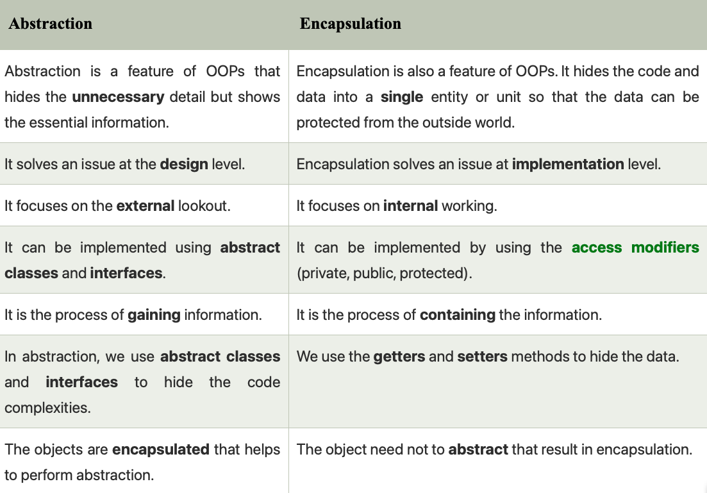

Classes and Objects
A class is a template for an object, and an object is an instance of a class. A class creates a new data type that can be used to create objects.
When you declare an object of a class, you are creating an instance of that class. Thus, a class is a logical construct. An object has physical reality. (That is, an object occupies space in memory.)
Objects are characterized by three essential properties: state, identity, and behavior. The state of an object is a value from its data type. The identity of an object distinguishes one object from another. The behavior of an object is the effect of data-type operations.
Memory Allocation
The new keyword dynamically allocates memory for an object and returns a reference to
it. In Java, all class objects must be dynamically allocated.
Box mybox; // declare reference to object
mybox = new Box(); // allocate a Box objectWhen you assign one object reference variable to another object reference variable, you are not creating a copy of the object, you are only making a copy of the reference. Both will refer to the same object.
Constructors, this, finalize
Once defined, the constructor is automatically called when the object is created, before the
new operator completes. Constructors have no return type, not even void. The implicit
return type is the class type itself.
Any class will have a default constructor, does not matter if we declare it in the class or not. If we inherit a class, then the derived class must call its super class constructor explicitly or implicitly.
The this Keyword
Sometimes a method will need to refer to the object that invoked it. this can be used
inside any method to refer to the current object. It is always a reference to the object on which
the method was invoked.
The finalize() Method
Java provides a mechanism called finalization. By using finalization, you can define specific actions that will occur when an object is just about to be reclaimed by the garbage collector.
protected void finalize( ) {
// finalization code here
}Access Control
How a member can be accessed is determined by the access modifier attached to its declaration. Usually, you will want to restrict access to the data members of a class, allowing access only through methods.
Modifiers Matrix
| Modifier | Class | Package | Subclass (Same Pkg) | Subclass (Diff Pkg) | World (Diff Pkg & Not Subclass) |
|---|---|---|---|---|---|
| public | Yes | Yes | Yes | Yes | Yes |
| protected | Yes | Yes | Yes | Yes | No |
| no modifier (default) | Yes | Yes | Yes | No | No |
| private | Yes | No | No | No | No |
Inheritance, super, and final
To inherit a class, incorporate the definition of one class into another using the
extends keyword. Java does not support the inheritance of multiple superclasses into a
single subclass.
Superclass References
A superclass variable can reference a subclass object. However, you will have access only to those parts of the object defined by the superclass.
Using super
The keyword super has two forms. The first calls the superclass's constructor. The
second is used to access a member of the superclass that has been hidden by a member of a subclass.
BoxWeight(double w, double h, double d, double m) {
super(w, h, d); // call superclass constructor
weight = m;
}The final Keyword
The keyword final has three uses: to create named constants, to prevent a method from
being overridden, and to prevent a class from being inherited.
Polymorphism (Overriding & Overloading)
Method Overloading (Compile-Time)
Defining two or more methods within the same class that share the same name, as long as their parameter declarations are different. Return type alone is insufficient to distinguish them.
Method Overriding (Run-Time)
When a method in a subclass has the same name and type signature as a method in its superclass, it overrides the method. Dynamic method dispatch is the mechanism by which a call to an overridden method is resolved at run time, rather than compile time.
Abstraction & Interfaces
Abstraction vs Encapsulation

Abstract Classes
You can require that certain methods be overridden by subclasses by specifying the
abstract type modifier. An abstract class cannot be instantiated, and any subclass must
either implement all abstract methods or be declared abstract itself. Abstract classes can have
non-abstract methods, final variables, static variables, and constructors.
Interfaces
Interfaces specify only what the class is doing, not how it is doing it. Variables declared in an
interface are implicitly public static final, and methods are
public abstract by default (prior to Java 8).
From Java 8 onwards, interfaces can contain default and static methods with
implementations. The calling code can dispatch through an interface without having to know anything
about the callee.
| Feature | Abstract Class | Interface |
|---|---|---|
| Inheritance | Can extend one class and implement many interfaces | Can extend multiple interfaces |
| Implementation | Using "extends" | Using "implements" |
| Variables | Final, non-final, static, non-static | Only static and final |
| Constructors | Allowed | Not Allowed |
Packages
Packages are containers for classes used to keep the class name space compartmentalized. They prevent collisions between classes with the same names. Packages are stored in a hierarchical manner corresponding to file system directories.
The static Keyword
When a member is declared static, it can be accessed before any objects of its class are created, and without reference to any object. A static method belongs to the class, not the instance.
A static method can call only other static methods and access static data. It cannot refer to
this or super keywords in any way. You cannot override static methods
because they are resolved during compile time.
class UseStatic {
static int a = 3;
static int b;
static {
System.out.println("Static block initialized.");
b = a * 4;
}
}Enumerations
An enumeration defines a class type created using the enum keyword. All enums implicitly
extend the java.lang.Enum class and cannot extend anything else.
Methods like values(), ordinal(), and valueOf() are present
inside java.lang.Enum. Enums can contain constructors (executed for each enum constant during class
loading), but they must be private or default modifiers.